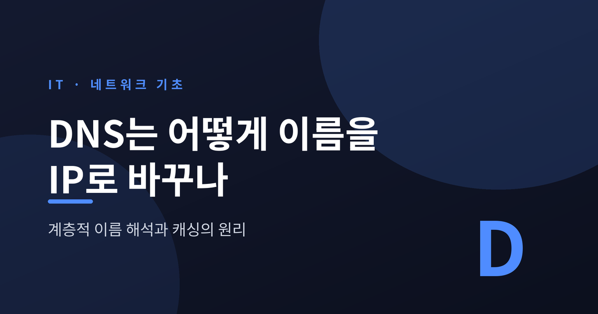
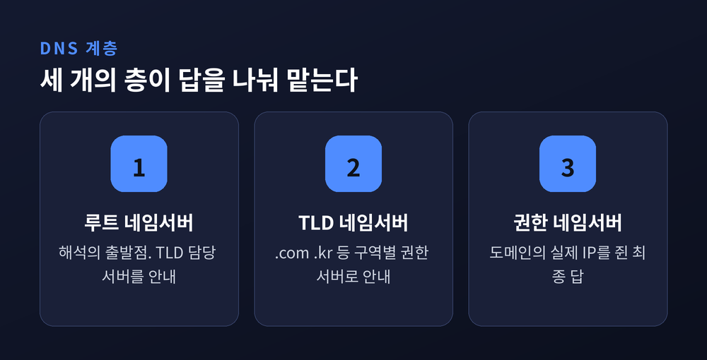
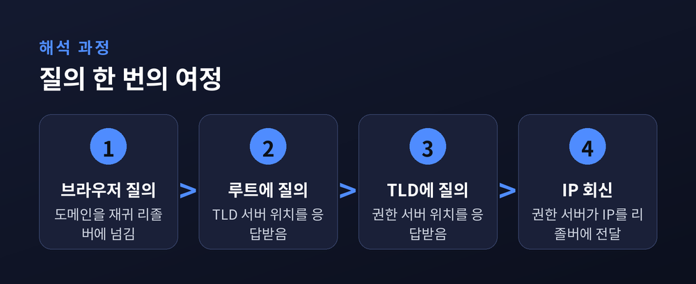
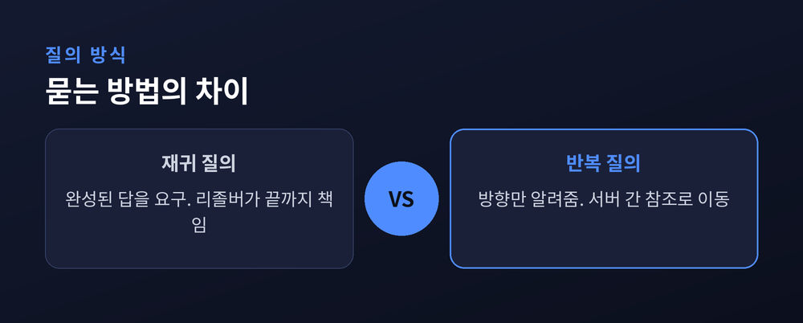
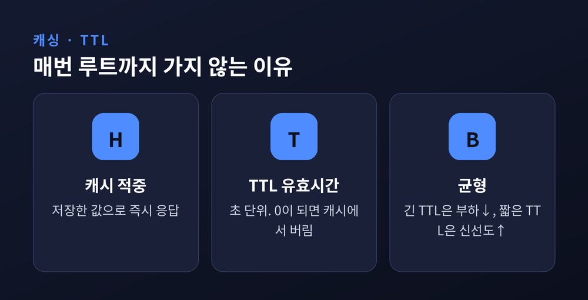
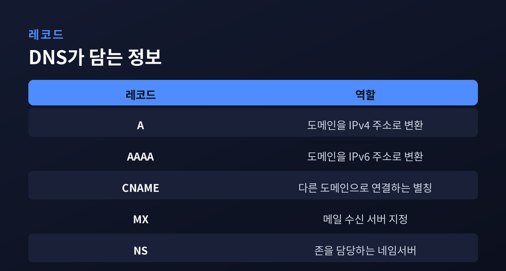

주소창에 example.com을 치면 몇 밀리초 만에 페이지가 열립니다. 그 짧은 순간, 눈에 보이지 않는 번역 한 번이 일어납니다. 오늘은 그 번역을 담당하는 DNS가 도메인 이름을 어떻게 IP 주소로 바꾸는지, 계층적 이름 해석과 캐싱의 원리를 차근히 정리해 보려 합니다.
먼저 결론부터 말씀드리겠습니다. DNS는 하나의 거대한 서버가 모든 주소를 외우는 방식이 아닙니다. 루트에서 시작해 아래로 책임을 위임하는 계층 구조이고, 한 번 찾은 답은 잠시 기억해 두는 캐싱으로 속도를 얻습니다.
사람은 이름을 기억합니다. 컴퓨터는 숫자로 통신합니다. 우리는 example.com을 외우지만, 실제 통신은 93.184.216.34 같은 IP 주소로 이뤄집니다. 그 사이를 이어 주는 번역기가 바로 DNS(Domain Name System)입니다.
DNS는 전 세계에 흩어져 있는 분산 디렉터리 서비스입니다. 한 곳에 모든 정보를 몰아넣지 않습니다. 그래서 특정 서버 하나가 멈춰도 인터넷 전체가 무너지지 않습니다.
표준은 1987년에 나온 RFC 1034와 RFC 1035에 정의되어 있습니다. 개념은 RFC 1034가, 구체적인 구현 명세는 RFC 1035가 담고 있습니다. 40년 가까이 지난 지금도 이 뼈대는 크게 바뀌지 않았습니다.
DNS의 이름 공간은 나무처럼 생겼습니다. 맨 위에서 아래로 "이건 네가 맡아라" 하고 책임을 넘기는 위임(delegation) 구조입니다. 핵심은 세 계층입니다.
첫째, 루트 네임서버입니다. 모든 해석의 출발점입니다. 자신이 직접 답을 알지는 못하지만, 각 최상위 도메인(TLD)을 누가 담당하는지 알려 줍니다.
둘째, TLD 네임서버입니다. .com, .org, .net처럼 도메인 맨 오른쪽 부분을 담당합니다. .kr, .jp 같은 국가 코드도 여기에 속합니다. 자기 구역 안의 도메인이 어느 서버로 가야 하는지 안내합니다.
셋째, 권한 네임서버입니다. 계층의 맨 아래이자 최종 답을 쥔 곳입니다. example.com의 실제 IP 주소를 확정적으로 알고 있는 서버가 바로 여기입니다.

그렇다면 실제로 주소창에 도메인을 입력하면 무슨 일이 벌어질까요. Cloudflare가 정리한 표준적인 흐름을 따라가 보겠습니다.
여정의 주인공은 재귀 리졸버(recursive resolver)입니다. 보통 통신사(ISP)가 제공하거나, 8.8.8.8(구글), 1.1.1.1(클라우드플레어) 같은 공용 DNS가 맡습니다. 사용자를 대신해 발품을 팔아 답을 찾아오는 심부름꾼입니다.
과정은 대략 이렇게 흐릅니다. 브라우저가 도메인을 리졸버에 넘깁니다. 리졸버는 루트에 묻고, 루트는 "그건 .com 담당에게 가라"고 답합니다. 리졸버는 .com TLD 서버에 묻고, TLD는 "그 도메인의 권한 서버는 여기다"라고 알려 줍니다. 리졸버는 권한 서버에 묻고, 마침내 IP 주소를 받아 브라우저에 전달합니다.
여기서 눈여겨볼 점이 하나 있습니다. 이 여덟 단계는 사실 매번 전부 실행되지 않습니다. 브라우저와 운영체제는 시작하기도 전에 자기 캐시부터 뒤집니다. 최근에 찾아 둔 주소가 아직 살아 있으면, 루트까지 갈 필요 없이 그대로 씁니다.

같은 "질의"라도 방식이 둘로 나뉩니다. 이 둘을 구분하면 위의 여정이 훨씬 또렷하게 보입니다.
재귀 질의(recursive query)는 완성된 답을 요구합니다. "IP 주소를 찾아 오든지, 없으면 없다고 답하든지 하라"는 식입니다. 사용자 기기와 리졸버 사이가 이 방식입니다. 리졸버가 끝까지 책임집니다.
반복 질의(iterative query)는 방향만 일러 줍니다. "나는 최종 답은 모르지만, 저 서버로 가 보라"는 참조(referral)를 건넵니다. 리졸버가 루트에서 TLD로, TLD에서 권한 서버로 옮겨 다니는 발걸음이 모두 이 방식입니다.
정리하면 이렇습니다. 사용자와 리졸버 사이는 재귀, 리졸버와 상위 서버들 사이는 반복. 번거로운 왕복은 리졸버가 대신 감당하고, 사용자는 완성된 답 하나만 받습니다.

만약 모든 접속이 루트부터 새로 시작한다면 어떻게 될까요. 루트 서버는 순식간에 마비될 것입니다. 이 문제를 푸는 열쇠가 캐싱(caching)입니다.
리졸버는 한 번 받은 레코드를 잠시 저장해 둡니다. 같은 도메인을 다시 물으면 전 과정을 반복하지 않고 저장해 둔 값으로 바로 답합니다. 이것을 캐시 적중(cache hit)이라 부릅니다. DNS가 빠르고 확장 가능한 진짜 이유가 여기 있습니다.
그 저장 기간을 정하는 값이 TTL(Time-To-Live)입니다. 레코드에 붙은 초 단위 유효 시간입니다. 캐시에 들어온 순간부터 값이 줄어들고, 0이 되면 버려집니다. 그러면 다음 질의는 다시 정식으로 서버를 찾아갑니다.
TTL에는 균형의 문제가 숨어 있습니다. TTL을 길게 두면 캐시 적중률이 오르고 서버 부하가 줄어듭니다. 대신 주소를 바꿔도 세상에 퍼지는 속도가 느려집니다. 예전 주소가 여기저기 캐시에 남아 한동안 살아 있는 셈입니다.
반대로 TTL을 짧게 두면 변경은 빨리 반영됩니다. 그러나 질의 부하와 지연이 늘어납니다. 그래서 서버 이전을 앞두면 미리 TTL을 수십 초 수준으로 낮춰 두는 것이 실무의 요령입니다. "부하냐 신선도냐", TTL은 늘 이 둘 사이의 저울질입니다.
없는 주소를 물었을 때도 캐싱은 작동합니다. 존재하지 않는 이름(NXDOMAIN)이라는 응답도 잠시 기억해 둡니다. 이 부정 캐싱(negative caching)은 RFC 2308에 정의되어 있고, 캐시 시간은 SOA 레코드의 값으로 정해집니다. "없다"는 답조차 다시 묻지 않도록 아껴 두는 것입니다.

DNS는 IP 주소만 담지 않습니다. 용도에 따라 여러 레코드 종류가 있고, 대부분 RFC 1034와 1035에 뿌리를 둡니다. 자주 만나는 것들을 표로 정리해 보겠습니다.
이 레코드들은 서로 얽혀 하나의 도메인을 완성합니다. 접속용 A와 AAAA, 별칭용 CNAME, 메일용 MX, 위임용 NS가 각자 제 몫을 합니다. 같은 도메인이라도 어떤 레코드를 묻느냐에 따라 돌아오는 답이 달라집니다.

마지막으로 자주 궁금해하시는 두 가지를 짚겠습니다.
DNS는 표준적으로 포트 53을 씁니다. 평소 질의는 가볍고 빠른 UDP를 탑니다. 다만 응답이 512바이트를 넘거나 존 전송 같은 작업이 필요하면 신뢰성 있는 TCP로 갈아탑니다. 포트 번호는 그대로 53입니다.
루트 서버가 왜 하필 13개일까요. 답은 이 512바이트에 있습니다. 13개의 이름과 그 IPv4 주소가 512바이트 UDP 패킷 하나에 꼭 들어맞기 때문입니다. 이름은 13개지만 실제 기계는 애니캐스트로 전 세계 1,500대 이상에 흩어져 돌아갑니다.
정리하면 이렇습니다. DNS는 한 서버의 암기가 아니라, 위임과 기억으로 굴러가는 시스템입니다. 루트에서 아래로 책임을 넘기는 계층이 규모를 감당하고, 잠시 답을 붙드는 캐싱이 속도를 만듭니다.
예전에는 도메인 하나를 여는 일이 그저 마법 같았습니다. 지금은 그 안에서 벌어지는 질의와 응답, 그리고 TTL의 저울질이 눈에 들어옵니다.
DNS는 외우지 않고 위임하고, 다시 묻지 않으려 기억한다.
주소창에 이름을 한 번 더 쳐 넣을 때, 그 이름이 숫자로 번역되는 짧은 여정을 떠올려 보시면 좋겠습니다.